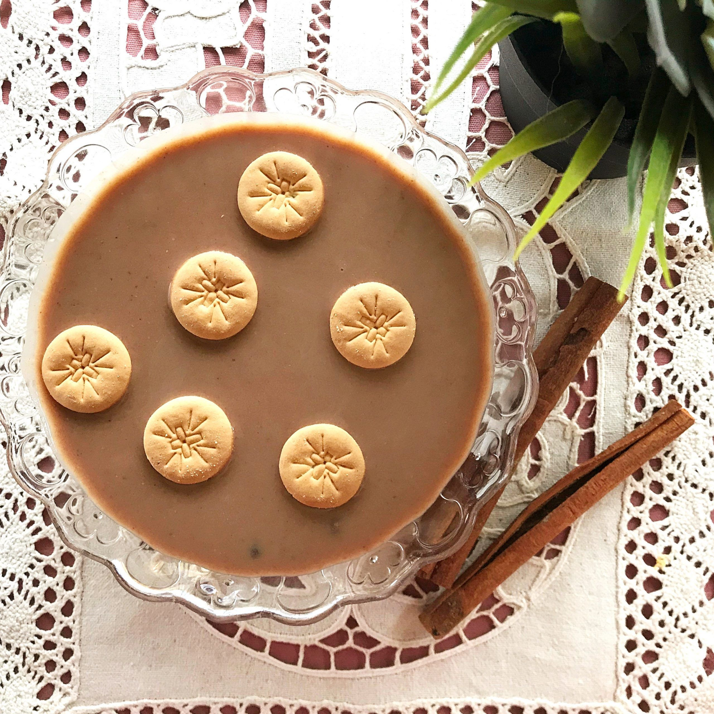

Pues prepárate para sorprenderte con esta increíble, y única dulce crema de habichuelas dominicana. Una
extraña combinación de ingredientes de postre, pero los dominicanos amamos esta sabrosa tradición de
Cuaresma.

ingredientes
4 tasa de habichuela roja
6 tasa de agua
2 tasa de leche de coco
3 tasa de leche evaporada
2 palito de canela
1/2 de sal
1 tasa de azucar
1 cucharita extracto de vainilla
1/2 lb de batata
10 clavo dulce
1/2 de pasa
8 tortitas pqueña de casabe
2 cuchaderita de mantequilla con sal
1 tasa de galletas de leche
paso
Licuar:Pon el agua y las habichuelas en la licuadora. Cuela y descarta los sólidos.
Hervir:Vierte las habichuelas, la leche de coco y la leche evaporada en una olla, agrega sal, azúcar,
vainilla, canela, clavos y la batata y cuece a fuego medio-bajo.
Cuece hasta que la batata esté blanda, revolviendo con frecuencia para evitar que se pegue.
Agrega las pasas y cuece otros 10 minutos. Revuelve regularmente para evitar que se adhiera al fondo y
se queme.
Enfriar:Retira del fuego y deja enfriar a temperatura ambiente y luego enfría en la nevera antes de
servir.
Tostar casabe:Unta la mantequilla en el casabe y cuece en el horno hasta que doren.
Servir:Sirve con el casabe a un lado. Pon las galletas en las habichuelas
Esta receta fue copiada de la pagina:ww.cocinadominicana